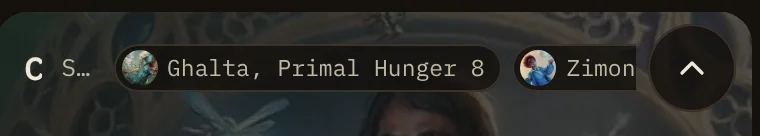
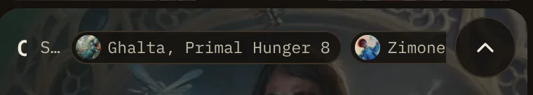
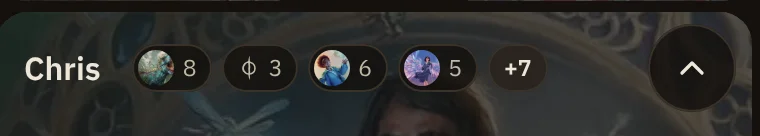
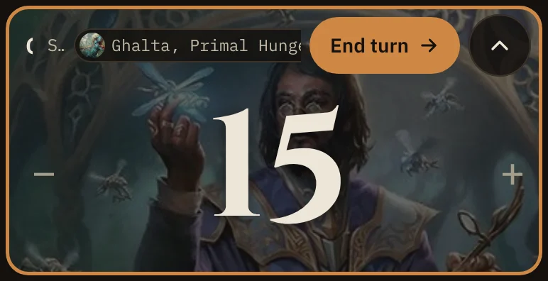
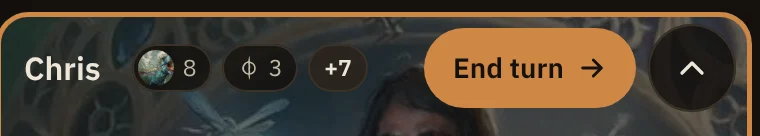
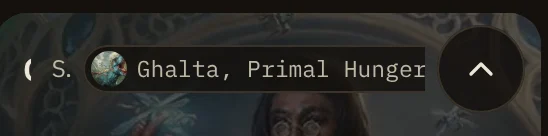
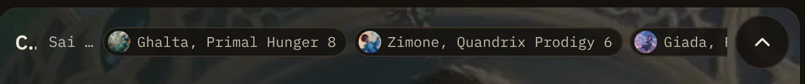
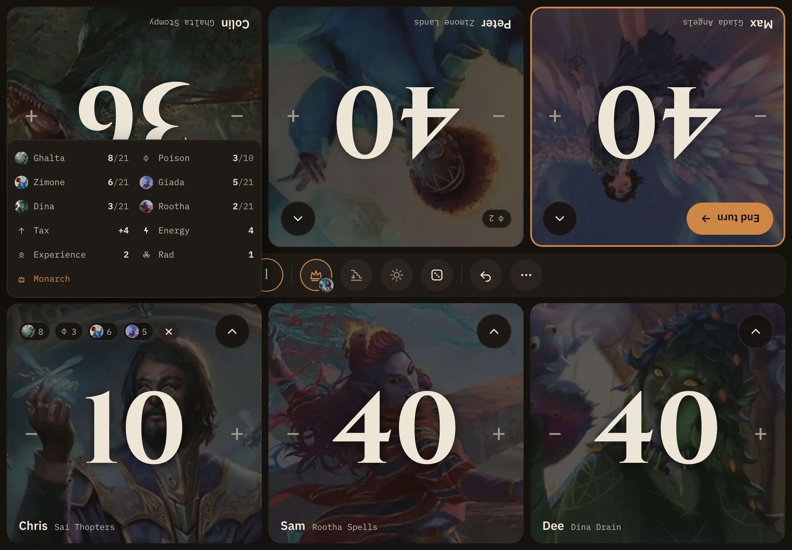

Life tracker · every badge fits · R2
Round 2 on your notes. Compact chips stay. Every panel now has one anatomy: the name and deck on the seat's outer edge, one controls row toward the strip. +N is a quick look, not the sheet. Whole seat panels below, shipped then R2, over the real PlaySurface. Fixture: Chris (you, Sai) has taken commander damage from every other seat (8, 6, 5, 3, 2), carries poison 3, energy 4, experience 2, rad 1 and tax +4, and is the monarch: 9 badges at a 4-seat table, 11 at 6.
Today · Two anatomies, set by the board
- The iPad's grid boards (two and two, three and three, three and two, face to face, along one side) draw a 52 px foot toward the strip with End turn, badges and the sheet button, and put the name on the outer edge (F12, F18, F19).
- Every other board (all phone boards and the iPad's ends boards) draws one 44 px name row toward the strip, holding name, deck, badges, End turn and the sheet button together (F04). Same table, two layouts: which one you get depends on the seat count you picked.
- Nothing in the play needs the split. The grid boards came later with the 52 px foot, and the phone row was never moved to match.
R2 · One anatomy on every board
- Name and deck on the seat's outer edge, a quiet strip (16 px name, 12 px mono deck; 18 and 12.5 in the iPad foot sizes).
- Toward the strip, one controls row: End turn, the badges, the sheet button at the end. 44 px on phone and the iPad ends, the shipped 52 px foot on the iPad grids.
- The top row stops carrying the name and deck, so it holds more: phone one-on-each-side goes from 4 chips + 5 more to 6 chips + 3 more, phone six ends from 4 + 7 to 6 + 5.
- The out face follows: name on the outer edge, the sheet button in the controls row.
Phone · one on each side


Phone · six, ends


Phone · your turn


Phone · sideways seat (turned to read)


iPad · one on each side


iPad · three and three


iPad · six, ends


Desktop · three and three


Phone · one on each side
The card opens from the seat's inner edge toward the middle of the table, the panel's width, turned to face the seat. Every badge with its words; damage and poison show how far to lethal (8/21, 3/10).

Phone · sideways seat
Same card, turned with Chris's seat: it opens across the strip toward the table's middle.

iPad · three and three
Opens over the strip. Two columns; it never scrolls at 11 badges.
Peek · A quick reference, not a second sheet
- Read only: no steppers and no rows to tap. The sheet button stays the one way to change a count, so the two controls never do the same job.
- +N becomes a ✕ in place while the card is open (aria-expanded; aria-label Close). A tap anywhere off the card, or Escape, closes it too; it closes by itself if the seat goes out or the badges clear.
- It lists every badge, not only the ones left out, in the same order as the row, so one look answers "how much is on me".
- Words: the commander's short name (up to its comma), the counter's name, Tax, Monarch, Initiative. Damage and poison read 8/21, 3/10; the rest show the figure alone.
- Surface --surface with the strong border and a drop shadow, 14 px radius; the seat is lifted over its neighbours while it is open. Fades in over 150 ms; under reduced motion it simply appears.
1 · Compact chips and the order
- Damage: the attacker's art and the figure. Counters: the icon and the figure. Tax: the arrow and +4. Monarch and initiative: the icon alone in the accent ring. Full words in each chip's aria-label and a desktop hover title.
- Damage and poison lead, nearest to lethal first; then tax, the other counters, the marks. Chips are never cut; the row keeps the longest run that fits beside +N.
Q2 · On your turn, End turn takes room from the chips
A · recommended
End turn keeps its label. The phone's bottom seat shows 3 chips + 6 for that turn.
B
While chips overflow, End turn drops to its 44 px arrow circle, as the short sideways rows already do; 2 more chips fit.